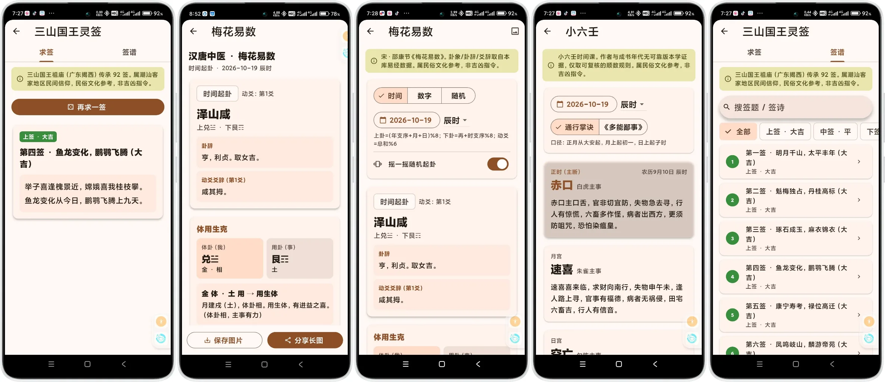
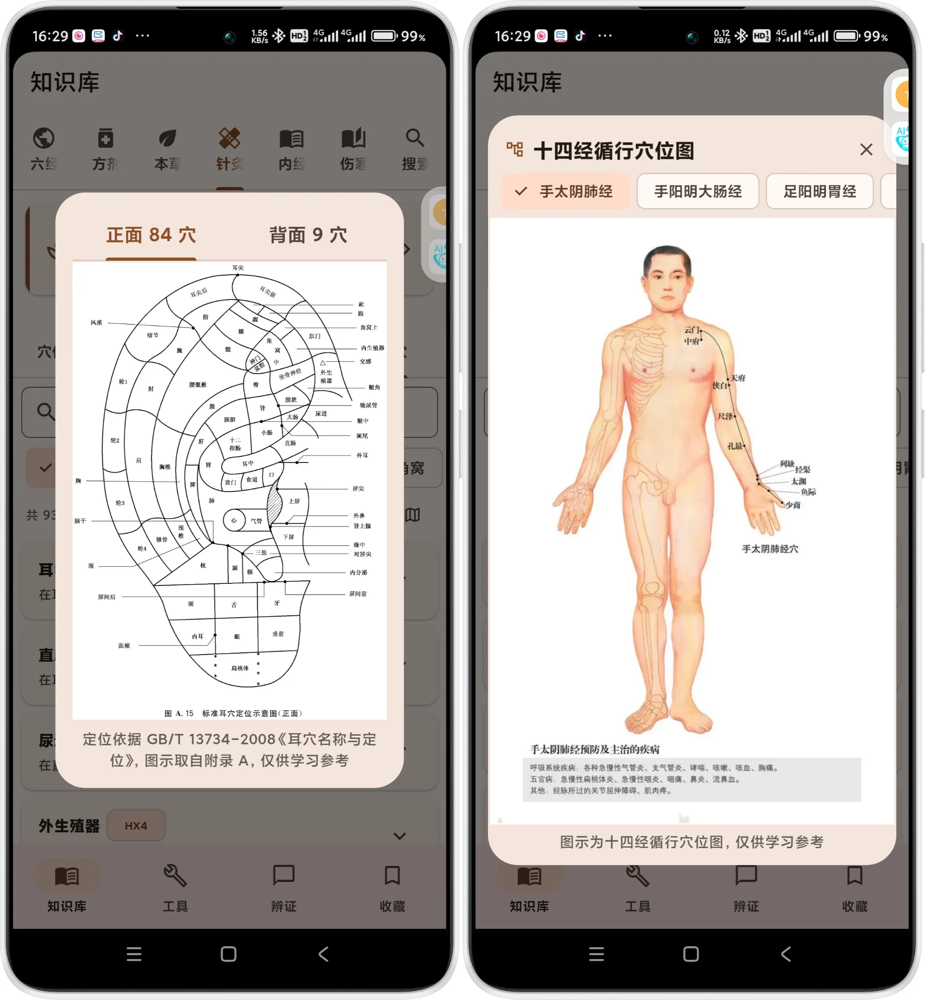
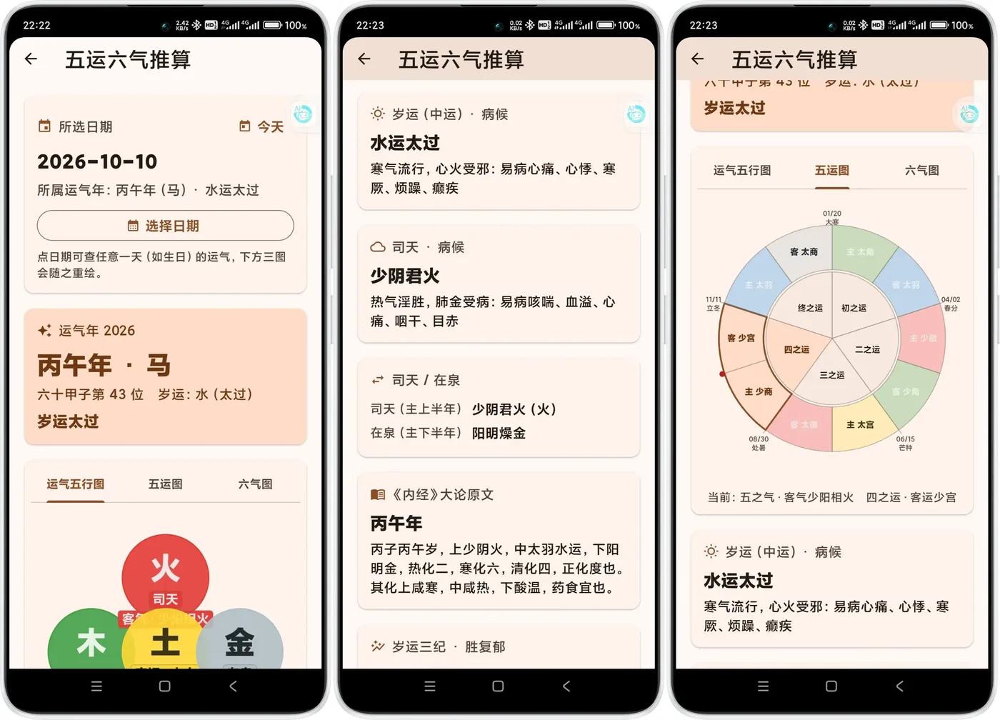
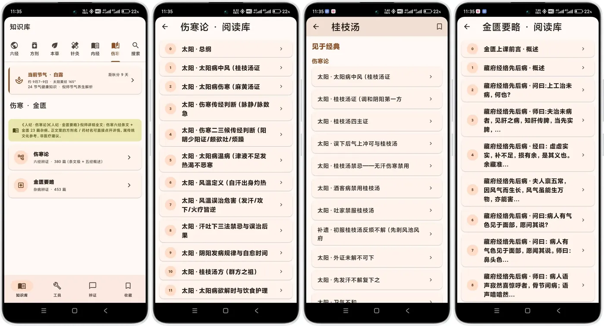

🩺
六经辨证问诊
引导式问诊逐项收敛，自动判断太阳 / 阳明 / 少阳 / 太阴 / 少阴 / 厥阴，并识别合病并病与传变趋势。
从问诊到开方，从条文到原文，一套完整的经方工作台
引导式问诊逐项收敛，自动判断太阳 / 阳明 / 少阳 / 太阴 / 少阴 / 厥阴，并识别合病并病与传变趋势。
给出组成、剂量、煎服法与禁忌，26 对相似证型自动对比关键差异，推荐经方加减。
322 首经方、465 味本草、408 穴，支持搜索、性味归经与六经筛选；穴位与处方双向跳转。
伤寒 380 条、金匮 453 条、内经 73 篇讲稿，加《灵枢》《针灸大成》原文；1327 条统一索引，搜到即跳到篇章。
子午流注、纳甲、灵龟八法、飞腾八法并列计算；十四经经络图、耳穴国标 93 穴、31 组透针方案。
运气五行图、五运图、六气图三图联动，任选日期重绘，带出岁运病候与司天在泉。
紫微斗数、八字详批、易经六十四卦、梅花易数、小六壬、三山国王灵签——均标注民俗文化参考。
长辈也能看清：字号滑到 200%，详情页、设置页与弹窗全部跟随，不只是首页。
全部数据打包在本地，不申请账号、不做追踪；断网也能问诊、查方、读经典。
讲稿与原文并列，方剂、药材、条文互相跳转
搜索 「桂枝汤」「标幽赋」 这类词，结果里直接出现经典分组，点一下就到原文。
暖棕配色、统一字号阶梯，深色模式同样可读




张仲景《伤寒论》的核心框架，也是整个 App 的骨架
最新版 v1.11.28 · 签名与历史版本一致，可直接覆盖安装
国内直连慢？上面按钮已走 ghproxy 镜像；也可直接访问 GitHub Releases。
Flutter 构建 · 全本地数据 · 无后台服务